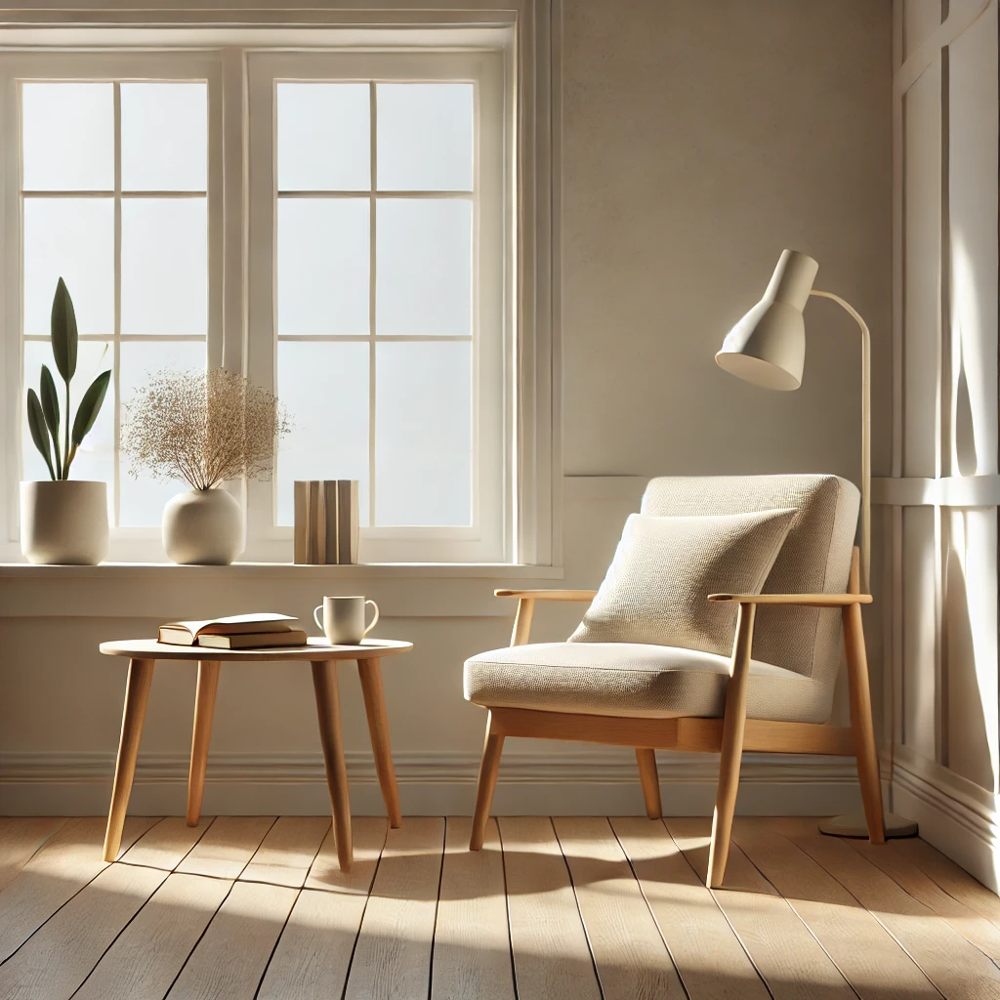
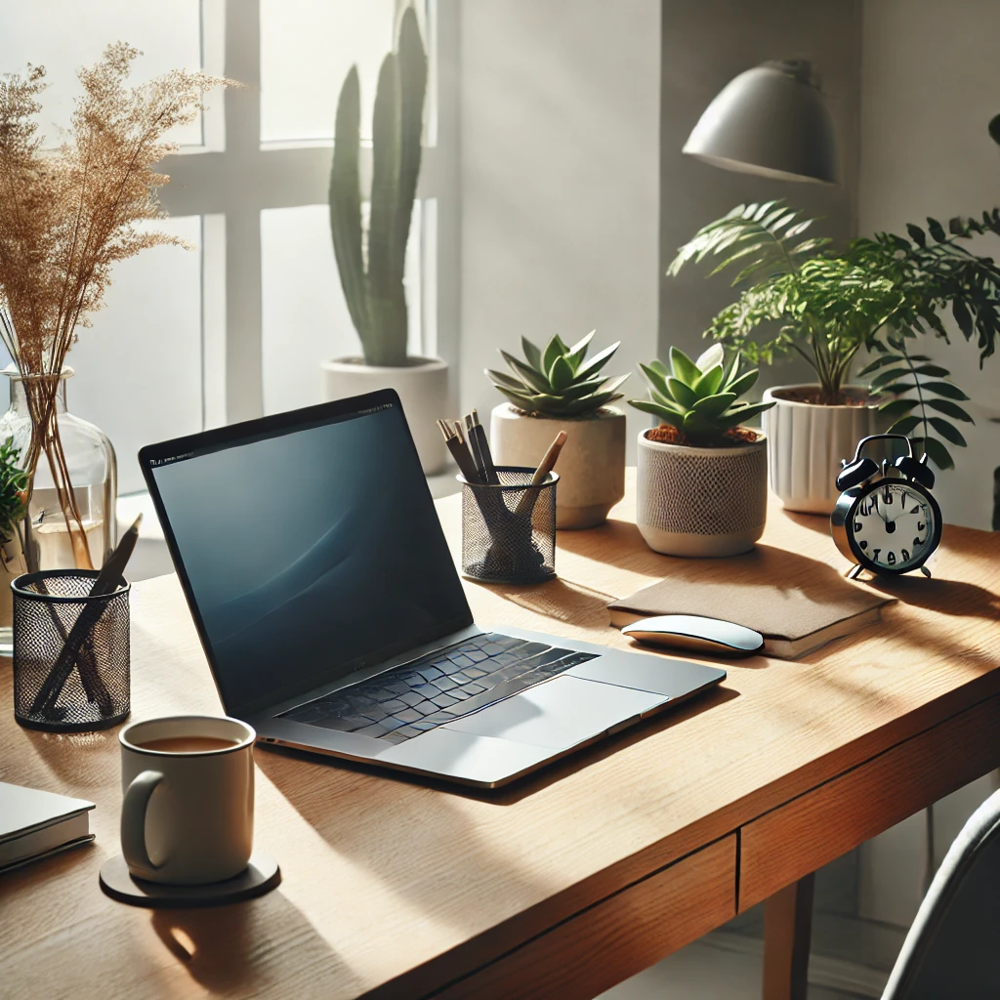

The Joy of Simple Living

In today's fast-paced world, it can be easy to get caught up in the hustle and bustle of everyday life.
We chase after bigger homes, faster cars, and the latest technology, but sometimes, happiness can be found in the most unexpected places—like living simply.
Minimalism and simple living have gained popularity in recent years as more people realize that less is more.
By decluttering our homes and minds, we can make space for the things that truly matter—whether that’s spending time with family, pursuing a passion, or simply enjoying the beauty of a quiet moment.
The beauty of simple living lies in its ability to free us from the pressures of consumerism and comparison.
Instead of focusing on what we don't have, we can focus on what we already have—and appreciate it.
Whether it’s a walk in nature, a good book, or a heartfelt conversation, these moments can be the foundation of a richer, more meaningful life.
How to Stay Motivated When Working from Home

Working from home has become the new normal for many people, but staying motivated can be a challenge.
Without the structure of an office environment, it's easy to get distracted or lose focus. However, with a few simple strategies, you can boost your productivity and stay on track.
First, establish a dedicated workspace. Working from the couch or bed may sound appealing, but it can make it difficult to separate work from relaxation.
Set up a home office or a designated area where you can focus without distractions.
Second, set a daily schedule and stick to it. Establishing a routine helps you stay productive and keeps your work-life balance in check.
Break your day into manageable chunks, and don't forget to schedule breaks to recharge.
Lastly, don't forget to communicate with your team or colleagues regularly. Staying connected can help combat feelings of isolation and make you feel more engaged with your work.
Whether it’s a quick video call or a messaging check-in, keeping the lines of communication open is key.
The Power of Morning Routines
Many successful people attribute their achievements to a well-structured morning routine.
Whether it’s exercising, meditating, or simply enjoying a quiet cup of coffee, how you spend the first hour of your day can greatly influence your mindset and productivity.
A good morning routine doesn't have to be complex or time-consuming. Start by setting a consistent wake-up time, allowing yourself to ease into the day rather than rushing through it.
Incorporating habits like stretching, journaling, or practicing mindfulness can help you feel more centered and focused as you approach your daily tasks.
Remember, the key to a successful morning routine is consistency. By making small, intentional changes and sticking to them, you can improve not only your mornings but also the overall quality of your day.
A well-designed morning routine is a powerful tool for creating a sense of balance and control, setting the foundation for a productive and fulfilling day.